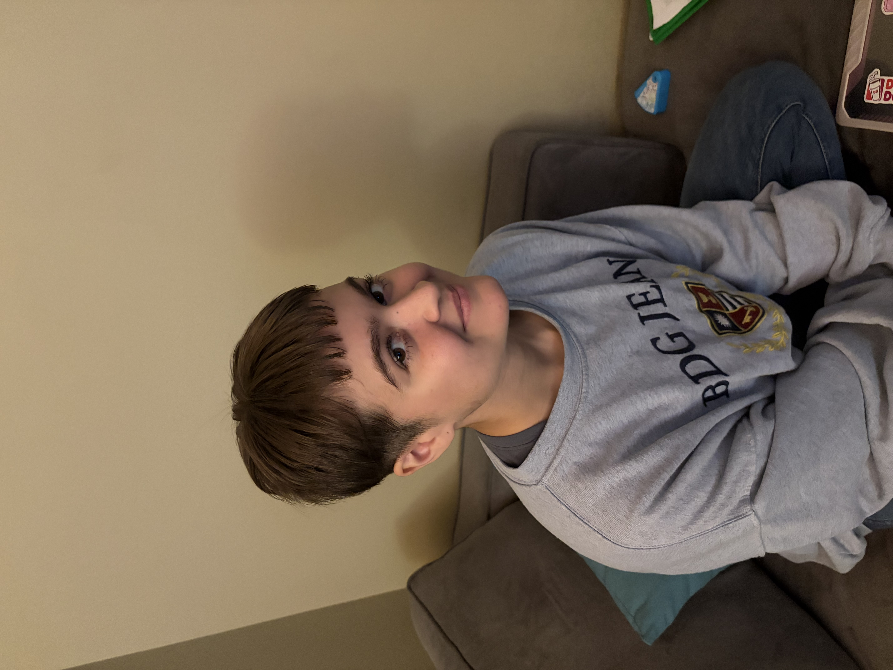

I am studying to get a major in art historyand a minor in Japanese studies. Something that I am interested in are certain aspects of computer science such as game development, 3D modeling, and 2D animation. I chose my major in art history because I think it has connections to my interest in Japanese culture and contemprary art, specifically Japanese contemporary art and everything else that encompasses it that I have other interests in. Outside of class, I enjoy playing video games, watching anime, and doing artwork. These are all things I enjoy doing in my free time that are also all somewhat correlated with my interest in computer science and Japanese culture.
This site that I am creating is for my midterm and hosted on Charlotte servers. I am planning to use this site as a portfolio to show off the projects I will be building in my ITSC 1110 class. It is to demonstrate successful hosting setup. Over the course of the semester, I will be refining the design and adding more interactive elements. I will be adding CSS and more content later so stay tuned for more updates as I add CSS and styling to the page! This page serves as the home base for my professional web presence. Thanks for visiting!